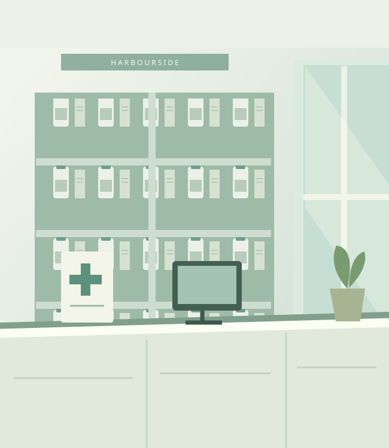

NRILLUSTRATIVE PROFILE
Nadia Rahman, MPharm
SUPERINTENDENT PHARMACIST · GPhC 2078441Independent prescriber with a special interest in respiratory care and inhaler technique.
WHITSTABLE · INDEPENDENT SINCE 1974 · NHS & PRIVATE
Independent community pharmacy on Harbour Street. Repeat prescriptions ready in 48 hours, vaccinations without an appointment, and free advice from someone who is not watching a ten-minute clock.

Order online, we handle the surgery.
Ready in 48 hours.
Flu, travel, shingles, and childhood catch-up. Walk-ins welcome.
EXPLORE SAMPLE CLINICS ↗MORE THAN A PRESCRIPTION COUNTER
Eight ways your local pharmacy can help.
Illustrative service directory.
VACCINATION CLINICS
Clinic types and sample prices from the brief. Current NHS eligibility, age suitability, clinical assessment and seasonal availability must be confirmed by a real provider.
| Clinic | Sample price / eligibility | How it works | Action |
|---|---|---|---|
| Flu | £18 · free if NHS eligible | Walk-in · October to January | |
| Covid booster | Free if eligible | By appointment · seasonal | |
| Shingles | £220 for the two-dose course | By appointment | |
| Travel package | From £45 depending on destination | Appointment · allow six weeks before travel | |
| Childhood catch-up | Free | By appointment |
MEET THE PHARMACISTS
Independent prescriber with a special interest in respiratory care and inhaler technique.
Runs the travel health clinic and the medicine review service.
Focuses on elderly care, blister packs, and coordinating with local care homes.
ONE LESS THING TO CHASE
Expected turnaround in the brief: usually 48 hours. A real request depends on prescription authorisation, stock and clinical checks. This page cannot place it.
Prepare repeat checklist ↗Order online, by phone, or drop the slip in. Takes about a minute.
You do not need to. This is the step most people find annoying, so we do it.
Usually within 48 hours. We text you when it is ready.
Free delivery within three miles, same day if ordered before 11am.
A HELPING HAND, TO YOUR DOOR
Free within three miles of Harbour Street. Same-day if ordered before 11am, next day after. We deliver to CT5 and parts of CT2.
Illustrative logistics, not a delivery promise. Dispensing readiness, radius, cut-off and available delivery days require direct confirmation. “Same-day” applies only to a ready prescription, not the initial request.Free local delivery · brief example
Check the local planning route ↗HEALTH ADVICE · GENERAL INFORMATION
PRESCRIPTION LOGISTICS ONLY
Keep medicine names, symptoms, NHS numbers and personal details off this demo. It does not contact a surgery or pharmacy.
CLINIC PREPARATION ONLY
No medical details needed. A real clinician must assess eligibility and suitability. Nothing is booked here.
HERE ON HARBOUR STREET
42 Harbour Street, Whitstable,
Kent CT5 1AQ
Parking and step-free access details were not supplied. Confirm accessibility and a real destination before travelling.
OPENING HOURS · EUROPE/LONDON
Closed for lunch 13:00–13:30 on weekdays.
The status pill calculates the supplied example schedule in London time, including lunch and weekends. Bank holidays and real opening changes are not known.